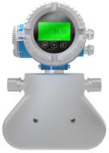
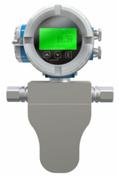
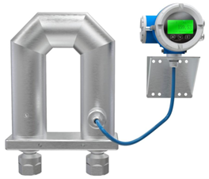

Исполнение P предназначено для систем с рабочим давлением выше 10 МПа. Включая заправку и дозирование водорода. Высокая чувствительность и стабильность при малых расходах обеспечивают прецизионный контроль в условиях высокого давления.
Применение специального композитного металла, устойчивого к водородному охрупчиванию, делает исполнение P оптимальным выбором для водородной энергетики, заправочных станций и систем дозирования H₂. Гладкая внутренняя поверхность трубок минимизирует гидравлическое сопротивление и обеспечивает стабильность измерений даже при минимальных расходах.



| Типоразмер | Максимальное давление, МПа |
|---|---|
| 001..P | ≤ 45 |
| 002..P | ≤ 20 |
| 003..P | ≤ 45 |
| 004..P | ≤ 30 |
| 008..P | ≤ 45 / ≤ 30 |
| 015..P | ≤ 30 |
| 025..P | ≤ 45 |
* Для типоразмера 008 указаны два значения в зависимости от исполнения.